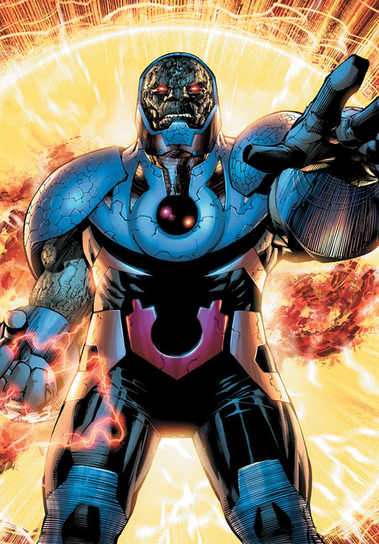
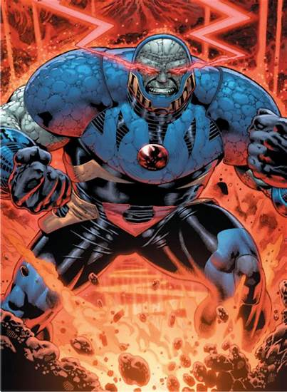
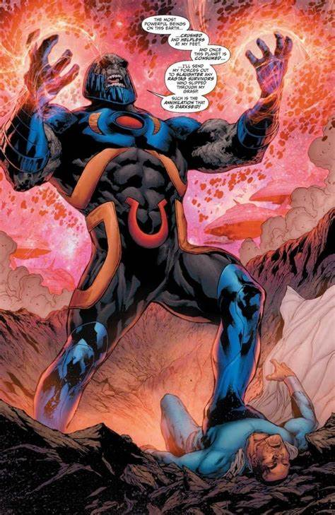
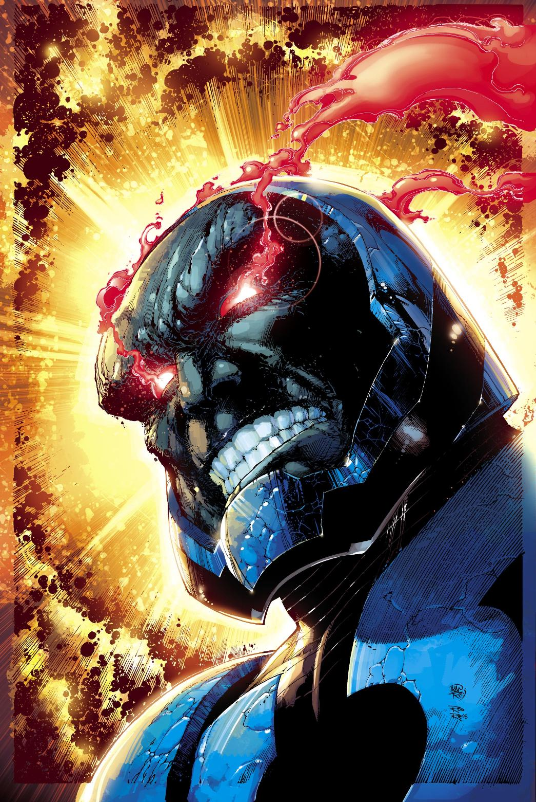
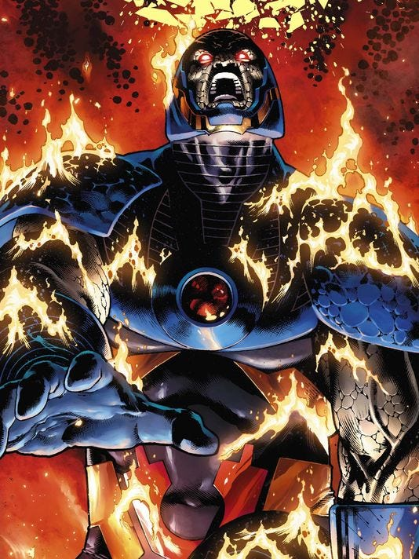
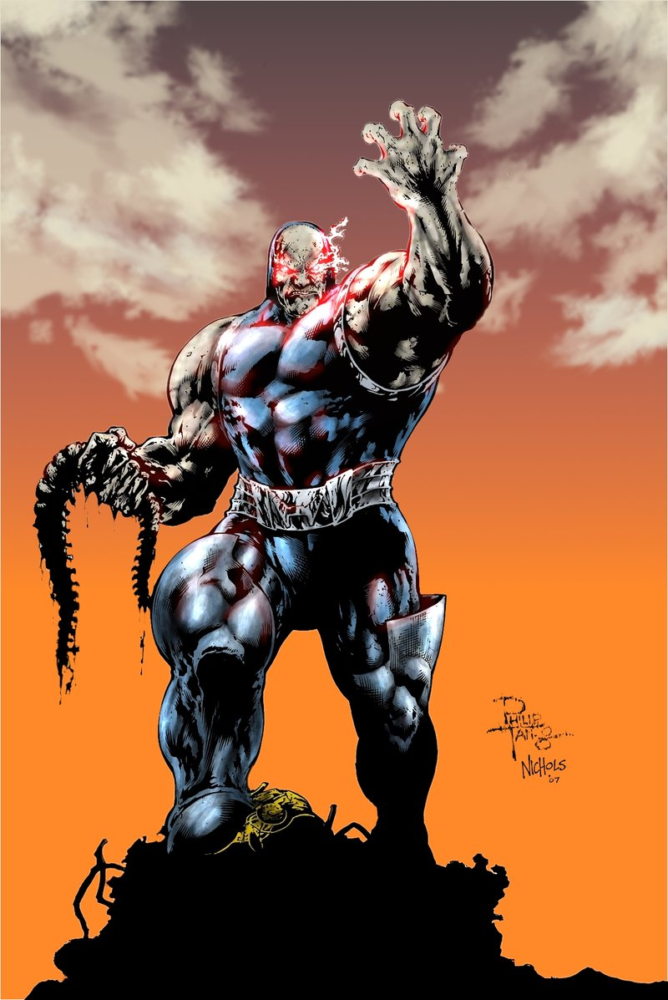

Darkseid
The son of King Yuga Khan and Queen Heggra, Prince Uxas, second in line to the throne of Apokolips, plotted to seize power over the planet. When his brother, Drax, attempted to claim the fabled Omega Force, Uxas murdered him and took the power for himself; transforming him into a rock-like creature, and taking a new name: Darkseid. At some point, he fell in love with an Apokoliptian scientist named Suli, with whom he had a son, Kalibak; however, Suli was poisoned by Desaad on Heggra's behalf, who believed that Suli was corrupting her son. Following Suli's death, Darkseid's heart grew even colder, and he had Desaad poison Heggra, finally becoming the supreme monarch of Apokolips. Darkseid had briefly been forced by his mother to marry Tigra, with whom he also had a son. After murdering his mother, Darkseid had both Tigra and their son, Orion, banished from Apokolips.
Darkseid's goal was to eliminate all free will from the universe and reshape it into his own image. To this end, he sought to unravel the mysterious Anti-Life Equation, which gives its user complete control over the thoughts and emotions of all living beings in the universe. Darkseid had tried on several other occasions to achieve dominance of the universe through other methods, most notably through his minion Glorious Godfrey, who could control people's minds with his voice. He had a special interest in Earth, as he believed humans possess collectively within their minds most, if not all, fragments of the Anti-Life Equation. Darkseid intended to probe the minds of every human in order to piece together the Equation. This has caused him to clash with many superheroes of the DC Universe, notably, the Kryptonian Superman. Darkseid worked behind-the-scenes, using superpowered minions in his schemes to overthrow Earth, including working through Intergang, a crime syndicate which employs Apokoliptian technology and later morphed into a religious cult that worships Darkseid as the god of Evil.





